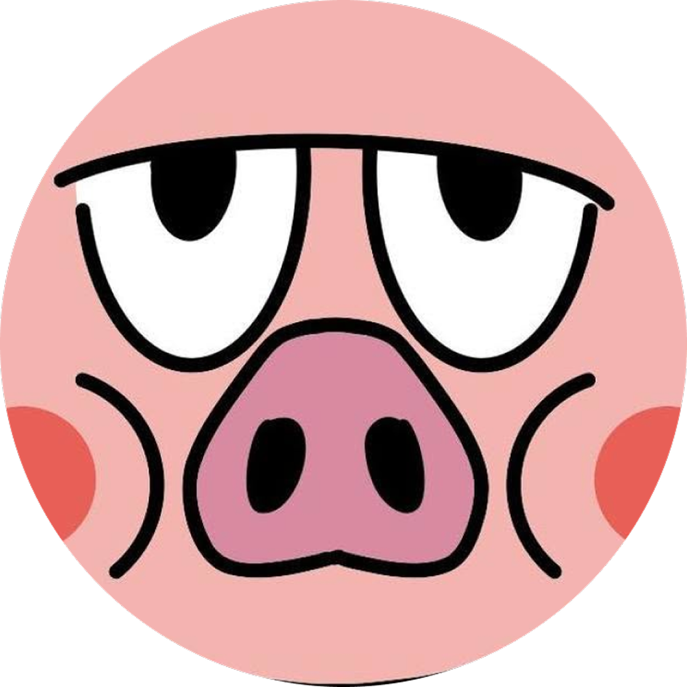

私について
About Me

Ryusei Kimura
現在、北海道情報大学に在学中。
大学の授業きっかけにウェブデザインに興味をもち、プロジェクト活動を通してUI／UXデザインを学べる安田研究室に参加しています。安田研究室で培った課題解決力やデザイン力を活かし、人々を引きつけつつも、自然に生活に溶け込むようなデザイン設計ができるデザイナーを目指しています。
スキルについて
Skill
Figma/Illustrate/Photoshop/visual studio code/After Effects etc
強みについて
Strength
集中力
周りの声が聞こえなくなるくらいの集中力と常に「何で？」を求める追求力が私の１番の強みです。例えば、中学高校での部活動で相手の弱点を試合中に模索し、勝利に貢献していました。現在は、Webデザイン制作でユーザーの目線に立ち見やすく設計し、１pxまでこだわることに努めています。
負けず嫌い
スポーツやゲームでは誰にも負けたくない「負けず嫌いな性格」の一面があり、中学高校でやっていた部活動では、どのようにして相手に勝つかや良くない点を常に分析していました。その経験が現在行なっているプロジェクト活動での課題に対して物事を多角的な視点で、分析し、熱量を持って向き合える力に繋がっています。
素直さ
フィードバックに対しては「まず実践する素直さ」と「その意図や目的を深く考える論理性」を大切にしています。自分に合う形で柔軟に吸収し、常に目的意識を持ってプロジェクトに取り組むことができます
趣味や特技について
Interest